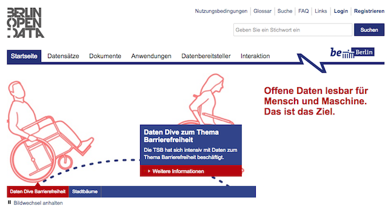
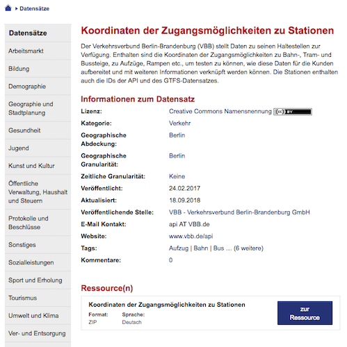
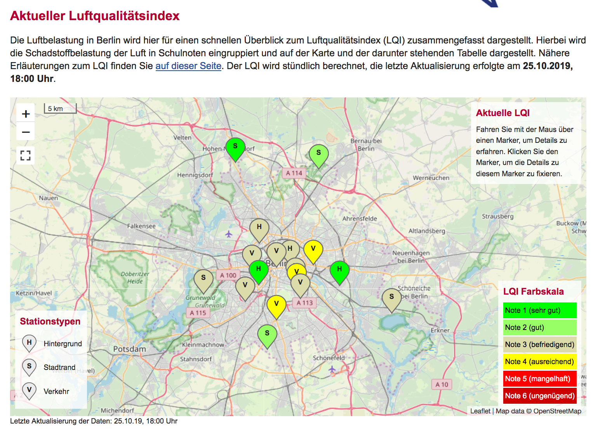
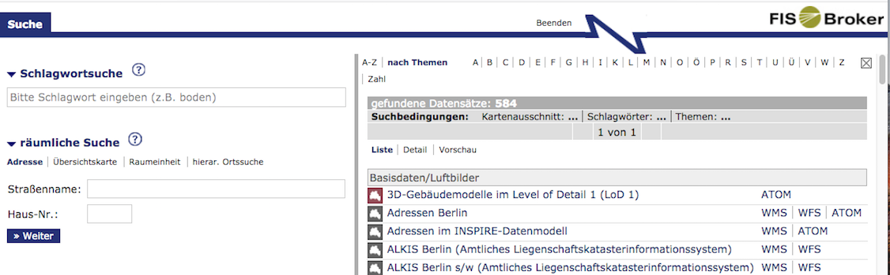
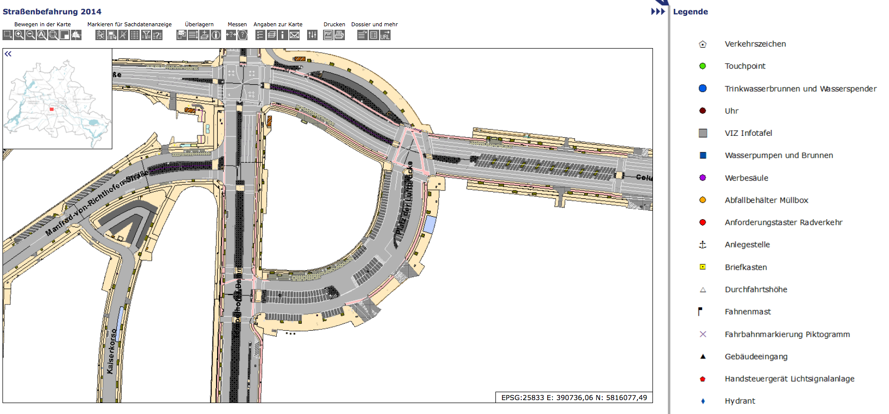
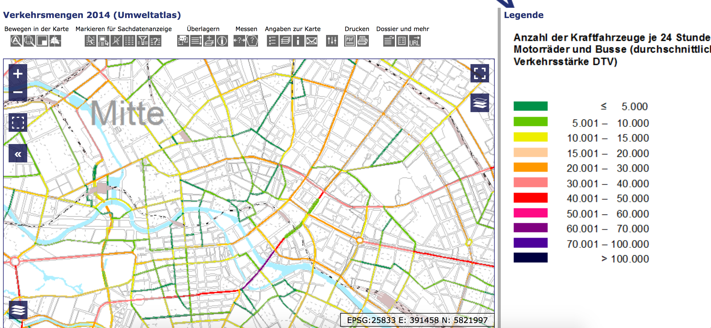
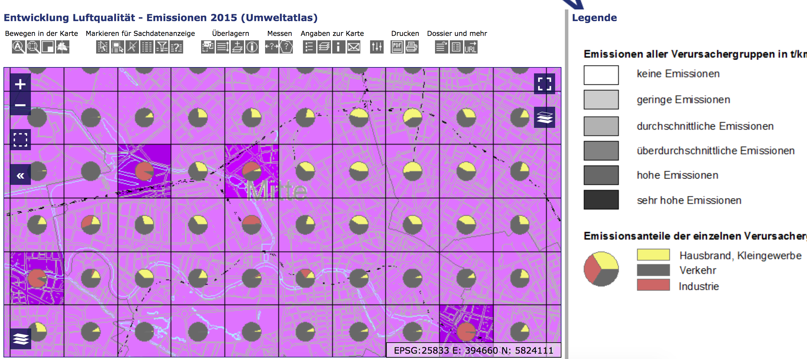
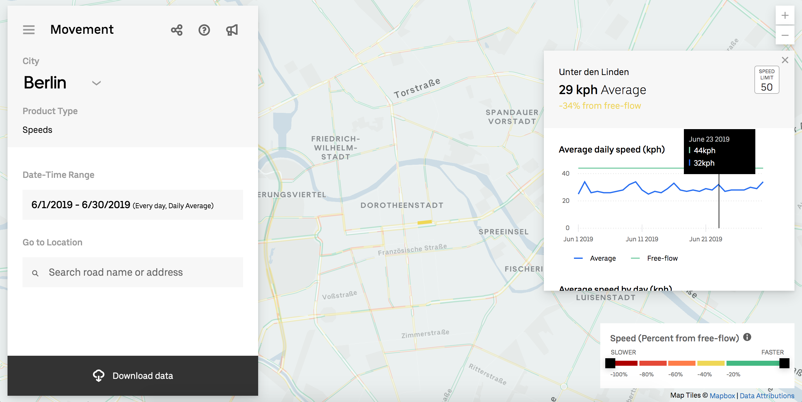

# Climathon 2019: Open Data Sources ### 25.10.2019, Victoria Boeck
## Slides https://technologiestiftung.github.io/citylab-slides/climathon-data/
## Berlin Open Data Portal https://daten.berlin.de - 2000+ Datasets - *Metadata* Portal – only links - All types of data (statistical, geospatial, etc) - Mostly individual files (few APIs) 
## Berlin Open Data Portal ### Dataset: Station Entrance Coordinates [Link](https://daten.berlin.de/datensaetze/koordinaten-der-zugangsm%C3%B6glichkeiten-zu-stationen-0) 
## Berlin Air Quality Measurement Network ### Dataset: Historical Readings from Individual Stations [Link](https://luftdaten.berlin.de/lqi) 
## FIS-Broker https://fbinter.stadt-berlin.de/fb/index.jsp - 500+ Datasets - Geospatial data for Berlin - Data provided as WMS (rendered maps) or WFS (raw data) 
## FIS-Broker ### Dataset: Street Survey (2014) [Link](https://fbinter.stadt-berlin.de/fb/index.jsp?loginkey=zoomStart&mapId=k_StraDa@senstadt&bbox=385587,5818190,396604,5824214) 
## FIS-Broker ### Dataset: Traffic Volumes (2014) [Link](https://fbinter.stadt-berlin.de/fb/index.jsp?loginkey=zoomStart&mapId=wmsk_07_01verkmeng2014@senstadt&bbox=387866,5818469,395425,5822591) 
## FIS-Broker ### Dataset: Air Quality (2015) [Link](https://fbinter.stadt-berlin.de/fb/index.jsp?loginkey=zoomStart&mapId=wmsk_03_12_2emissionen@senstadt&bbox=384196,5818470,395453,5824325) 
## FIS-Broker ### Downloading from the FIS-Broker: How-to guide: https://lab.technologiestiftung-berlin.de/projects/fisbroker-to-qgis/en/
## Uber Movement Platform ### Dataset: Traffic Speeds [Link](https://movement.uber.com/explore/berlin/) 
## Questions we're interested in: - How can we **maximize the complementarity** of Berlin’s public transit and shared mobility offerings? - Where are the opportunities (using data) to optimize one or both systems, so that it is **as easy as possible** for citizens to shift seamlessly between both, and, in the process, **decrease reliance on private cars in the city**?
## Questions we're interested in: - When it comes to provision of infrastructure – i.e. public transit, bike paths, sidewalks, general streets, etc. – where are there **opportunities to improve or optimize existing infrastructure** (or add new infrastructure) to maximize the desirability and viability of more sustainable and environmentally friendly modes of transit (e.g. walking, biking, public transit)? - Alternatively: How can we **use data on existing infrastructure** to encourage citizens to use more sustainable mobility practices, such as using geospatial data to create tools that highlight the walkability or “bikeability” of certain areas for citizens?
## Contact: ### CityLAB Berlin [@citylabberlin](https://twitter.com/citylabberlin)\ [citylab-berlin.org](https://citylab-berlin.org) Victoria (Tori) Boeck Boeck@technologiestiftung-berlin.de